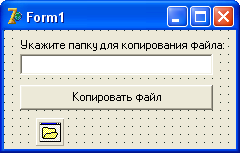

Под словом файл в Delphi (и в любом языке программирования) понимается область внешней памяти ПК (жесткий диск, дискета, компакт- диск и т.п.), которая имеет имя.
Файлы в Delphi могут обрабатываться различными способами, в том числе и через функции WinAPI.
Файлы могут быть трех вариантов:
Типизированные.
Такие файлы принадлежат к какому-то типу данных, и могут работать только с ним.
Это очень удобно для создания файлов записей.
Такие файлы мы будем изучать чуть позже.
Текстовые файлы.
Такой тип файлов предназначен для работы с текстом.
Нетипизированные файлы.
Предназначены для побайтовой работы с файлами любого типа.
Например, такой тип удобно использовать для копирования файла, его переноса или переименования.
Файлы объявляются следующим образом:
var
f1 : File of <тип>; //типизированные файлы
f2 : TextFile; //текстовый тип файлов
f3 : File; //нетипизированные файлы
Однако, присвоив какой-то переменной файловый тип, мы еще не можем работать с файлом.
Для этого мы вначале должны связать эту переменную с файлом.
Делается это следующим образом:
AssignFile(f1, 'filename.txt'); //связывание переменной с файлом
После этой функции, мы можем обращаться с переменной f1 как с файлом filename.txt.
Однако, если такого файла нет, мы получим ошибку, поэтому перед использованием связывания желательно делать проверку на наличие файла.
Такая проверка проводится функцией FileExists().
Ее синтаксис следующий:
FileExists('c:\01\myfile.txt');
В качестве параметра в функцию передается адрес файла и его имя.
Можно передавать только имя, но тогда программа будет искать файл в текущей директории.
Функция возвращает True, если такой файл существует, и False в противном случае.
Поэтому мы можем использовать ее для проверки наличия файла:
adres := 'c:\01\myfile.txt';
if FileExists(adres) then begin
AssignFile(f1, adres); //связали файловую переменную с файлом
… //дальнейшая работа с файлом
end; //if
В дальнейшем, при работе с файлом, может возникнуть исключительная ситуация.
Внимание!
Такой термин мы встречаем в первый раз, однако он очень важен для понимания.
Что такое исключительная ситуация?
Это любая ошибка программы, которая может произойти во время работы.
Например, вы открыли какой-то сетевой файл и начали работу с ним.
А другой пользователь в это время взял да удалил этот файл.
При попытке чтения из несуществующего файла, или записи в него, произойдет ошибка и создастся исключительная ситуация.
Если вы не обработаете эту ошибку, то компьютер, скорее всего, намертво повиснет.
Поэтому в любой ситуации, когда имеется риск возникновения исключительной ситуации, программист ВСЕГДА должен ее обработать.
Для этого существует блок try-finally-end:
try //блок кода, в котором может произойти ошибка finally //код, который должен выполниться в любом случае, //например, код закрытия файла end; //try
Если наша программа совершила непоправимую ошибку, то код, заключенный в блоке finally выполнится в любом случае.
Таким кодом обычно делают закрытие файла.
Если даже ошибка и совершится, файл все равно будет закрыт и программа не повиснет, а будет продолжать работу.
Приучите себя ВСЕГДА использовать этот блок при работе с сомнительным кодом.
Как бы хороша ни была программа, всегда найдется пользователь, который заставит ее сделать ошибку.
Давайте создадим проект, который будет копировать файл в другое место, и на этом примере познакомимся с реальной работой с файлами.
Создаем новый проект.
Устанавливаем на форму Edit, в поле которого будем писать, куда мы хотим копировать файл.
Также над ним можно установить Label, в котором введем: "Укажите папку, куда мы будем копировать".
Устанавливаем на форму кнопку, на которой пишем "Копировать файл".
Также с вкладки Dialogs устанавливаем на форму компонент OpenDialog, чтобы мы могли выбрать файл для копирования.
Далее, нам осталось обработать нажатие на кнопку.
Все наши действия по открытию файла и его копированию будут происходить в процедуре нажатия на кнопку.
Вот полный листинг этой процедуры:
procedure TForm1.Button1Click(Sender: TObject);
var
fFrom, fTo : File; //нетипизированные файл-источник, и файл-копия
colRead, colWrite : Integer; //количество прочитанных и записанных байт
buf : array [1..2048] of Char; //буфер символов для копируемого текста
filename : string; //переменная с адресом и именем файла
begin
//если нет адреса, куда копировать, то выходим
if Edit1.Text = '' then begin
ShowMessage('Укажите папку, куда нужно копировать файл!');
Edit1.SetFocus;
Exit;
end; //if
//если не выбрали файл, то выходим
if not OpenDialog1.Execute then Exit;
//смотрим адрес и имя файла:
filename := OpenDialog1.FileName;
try
//связываем переменные с файлами:
AssignFile(fFrom, filename); //откуда
AssignFile(fTo, Edit1.Text+'\'+ExtractFileName(filename)); //куда
//открываем файл для чтения:
Reset(fFrom, 1);
//открываем файл для записи:
Rewrite(fTo, 1);
//обнуляем переменные
colRead := 0;
colWrite := 0;
//копируем, пока не наступит конец файла:
while colRead = colWrite do begin
BlockRead(fFrom, buf, SizeOf(buf), colRead);
if colRead = 0 then break;
BlockWrite(fTo, buf, colRead, colWrite);
end; //while
finally
//закрываем файлы
CloseFile(fFrom);
CloseFile(fTo);
ShowMessage('Файл скопирован!');
end; //try
end;
Теперь разберем этот код и познакомимся с новыми функциями.
После того, как с помощью функций AssignFile() мы связали переменные с файлами, откуда мы собираемся копировать, и куда, мы пользуемся функциями Reset и Rewrite.
Reset открывает файл только для чтения. Все попытки изменить такой файл приведут к ошибке.
При открытии файла указатель (курсор) устанавливается на начало файла.
Эта функция работает немного по- разному с разными типами файлов.
В случае нетипизированного файла, функция Reset имеет два параметра – файловую переменную и длину записи в байтах.
Мы указали в примере, что наша запись – 1 байт.
Так удобней для обработки кода.
Rewrite имеет такие же параметры, что и Reset, но она открывает файл для записи.
Причем если файла нет, то он создается, а если есть – перезаписывается.
Указатель также устанавливается в первую позицию.
Далее мы "обнулили" переменные типа Integer.
Об этих переменных речь впереди, а пока нам нужно, чтобы они были равны друг другу и имели значение 0.
Дальше мы начинаем условный цикл while, где проверяется равенство этих двух переменных.
А вот дальше идет интересная функция BlockRead.
Она предназначена для работы только с нетипизированными файлами, для работы с файлами другого типа используют функцию Read и Readln.
Функция BlockRead считывает информацию сразу блоками, что значительно ускоряет процесс копирования файлов.
Эта функция имеет четыре параметра, причем последний необязателен.
Разберемся с этими параметрами.
Переменная файлового типа, ранее связанная с файлом функцией AssignFile().
Буфер, куда будут записываться прочитанные данные.
Поскольку файл нетипизирован, данные могут быть любого типа – символьные, как в текстовом файле, или двоичные, как в программе, то есть, исполняемом файле.
В качестве буфера у нас служит массив символов, куда мы эти данные и считываем.
Чем больше такой массив, тем больше данных запишется за один раз, и тем быстрее будет происходить копирование.
Однако увлекаться увеличением буфера тоже не стоит.
В данном случае мы использовали такой размер, какой указан в справочной системе самой Delphi по функции BlockRead.
Дальнейшее увеличение размера буфера не приносит заметных преимуществ.
Количество байт, которые нужно прочитать.
Здесь мы использовали функцию SizeOf(), которая возвращает размер массива.
Тем самым мы указали, что нужно прочитать максимальное количество байт, которое поместится в этот массив.
Необязательный параметр – это переменная целого типа.
После чтения данных, в эту переменную заносится количество реально прочитанных байт.
Вообще-то количество реально прочитанных байт должно соответствовать количеству указанных байт, которые нужно прочитать.
Однако есть несколько исключений.
Во-первых, может произойти ошибка чтения данных.
Во-вторых, размер реально прочитанных байт может быть меньше заявленного размера, если мы прочитали файл до конца, и последний прочитанный кусочек оказался меньше, чем размер буфера.
И в-третьих, он может вовсе равняться нулю, если курсор (указатель) стоит на конце файла.
Итак, мы вызываем функцию BlockRead.
Мы указываем файл, из которого нужно читать, буфер, куда нужно поместить прочитанные данные, указываем количество байт, которые нужно прочитать, и даем переменную, куда запишется количество реально прочитанных байт.
И если мы прочитали 0 байт, это означает, что мы добрались до конца файла.
В этом случае мы выполняем директиву break, которая заканчивает цикл while.
Если же количество прочитанных байт больше нуля, значит, в буфере есть прочитанные данные, следовательно, их нужно записать.
Для этого мы вызываем процедуру BlockWrite, которая имеет такие же параметры, но не читает данные, а записывает их.
Посмотрите, в качестве третьего параметра мы используем переменную colRead, в которой хранится количество прочитанных ранее байт.
То есть, если в последнем кусочке у нас оказалось меньше байт, чем мы можем поместить в буфер, значит, такое же количество мы должны записать.
Вот и все премудрости копирования файлов!
Не забываем, что работа с файлом нередко приводит к ошибке, поэтому ее нужно поместить в блок try..finally..end.
В дальнейшей практике, при необходимости копировать файл желательно прибегать именно к такому способу, как к более быстрому и надежному.
В нашем примере осталось пара недостатков.
Как копирование файла выглядит с точки зрения пользователя?
Он полагает, что, отдав программе команду копировать, он получает точную копию файла, равную оригиналу во всем.
А как копирование файла выглядит с точки зрения программиста?
Программист понимает, что он открывает исходный файл, откуда будет брать данные, и создает новый файл, куда эти данные он потом запишет.
Все хорошо, вот только дата и время создания файла будут разные – копия будет иметь текущую дату.
Особой роли это не играет, однако иногда нужно и дату присваивать ту, которую имеет исходный файл.
Как это сделать, мы поговорим на "Записи".
Второй недостаток: мы твердо полагаем, что пользователь ввел в поле Edit адрес в таком формате:
C:\MyDir
Затем к этому адресу мы добавляем обратный слэш ("\").
А если он сам уже поставил его?:
C:\MyDir\
Тогда, в результате кода
AssignFile(fTo, Edit1.Text+'\'+ExtractFileName(filename)); //куда
Мы получим ошибку, так как имя файла может выглядеть так: "C:\MyDir\\myfile.dat".
Попробуйте самостоятельно организовать проверку на наличие обратного слэша в конце адреса.
Например,
if Edit1.Text[Length(Edit1.Text)] <> '\' then Edit1.Text := Edit1.Text + '\';
А затем прибавлять имя файла к адресу уже без этого знака:
AssignFile(fTo, Edit1.Text+ ExtractFileName(filename)); //куда
Перенос файла осуществляется точно так же, однако после того, как мы скопировали файл, и закрыли оба файла, исходный файл нужно удалить.
Для этого существует функция DeleteFile(), в качестве параметра которой мы указываем адрес и имя удаляемого файла.
В нашем примере мы можем указать OpenDialog1.FileName.
Функция вернет истину, если удаление произошло успешно, и ложь в противном случае.